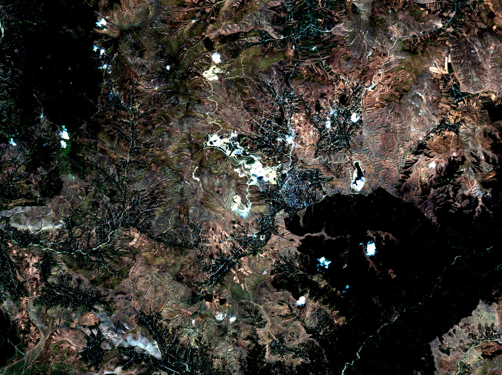

Nurtac Suleymanzade · GIS / 3D & Advanced
Hydrothermal alteration mapping — Gedabek mining district (Sentinel-2)
Remote-sensing geology for mineral targeting around the Gedabek Cu–Au mine in western Azerbaijan. Band ratios and a directed (Crosta) principal-component analysis of Sentinel-2 SWIR bands highlight clay/sericite and iron-oxide alteration, the surface fingerprints of porphyry and epithermal systems.
2025-08-30Sentinel-2 L2A scene
0.00 %cloud cover
2216×1654pixels @ 10 m
5.6 km²top-3 % alteration anomalies
Interactive viewer
Ratio composite: R = SWIR1/SWIR2 (Al-OH clay, sericite), G = Red/Blue (ferric iron oxide, gossan), B = SWIR2/NIR + Green/Red (ferrous iron). Black = vegetation, water or cloud (masked).Products

True colour, with the open pits and the heap-leach pad visible Alteration ratio composite
Alteration ratio compositeMethod
- Scene S2A_38TNK_20250830_1_L2A from the Earth Search STAC (AWS open data), bands B02, B03, B04, B08, B11 and B12. The 20 m SWIR bands are resampled to 10 m.
- Masks: NDVI < 0.35 (bare ground only) and Scene Classification to remove cloud, shadow and water.
- Band ratios for Al-OH clay (B11/B12), ferric iron (B4/B2) and ferrous iron (B12/B8 + B3/B4), each with a 2–98 % stretch.
- Directed PCA (Crosta) on B2/B8/B11/B12, run on the GPU; PC4 carries opposite B11/B12 loadings and so isolates hydroxyl.
- Combined index = mean(clay ratio, hydroxyl PC). The top 3 % of bare pixels are flagged as anomalies.
What I deliver on a client project
- ASTER / Landsat / Sentinel-2 / WorldView-3 alteration maps (argillic, phyllic, propylitic, iron oxides)
- Lineament extraction from DEM hillshades, plus structural density maps
- Prospectivity (fuzzy / weights-of-evidence) model combining geology, geochemistry and remote sensing
- Target list with coordinates, priority and field-check plan (GeoPackage / KMZ / PDF)
Limitations of this sample
- Sentinel-2 has only 2 SWIR bands, so it cannot separate kaolinite, alunite and sericite as ASTER or WorldView-3 SWIR can.
- Strong anomalies on the mine pits, waste dumps and roads are already known disturbance. Real targets need geological context and field checks.
- Uncalibrated, with no ground truth or spectral library matching. Vegetated slopes are masked and not assessed.
Built by Nurtac Suleymanzade, GIS analyst (PhD research in spatial analysis). Compute: cloud Linux workstation with NVIDIA L4 GPUs. Open data only.